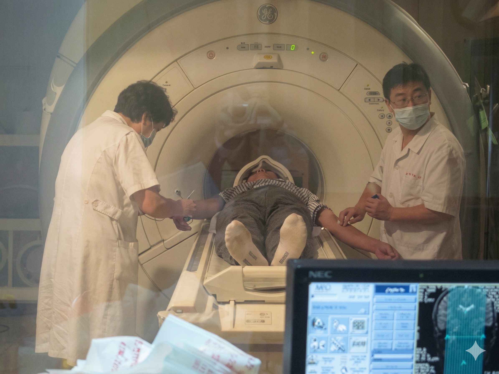
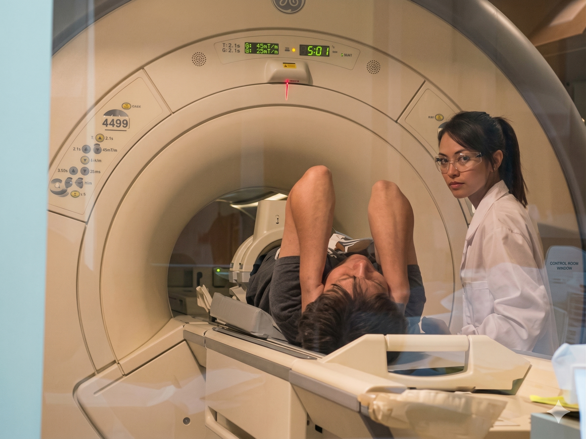
Patient Prep · USA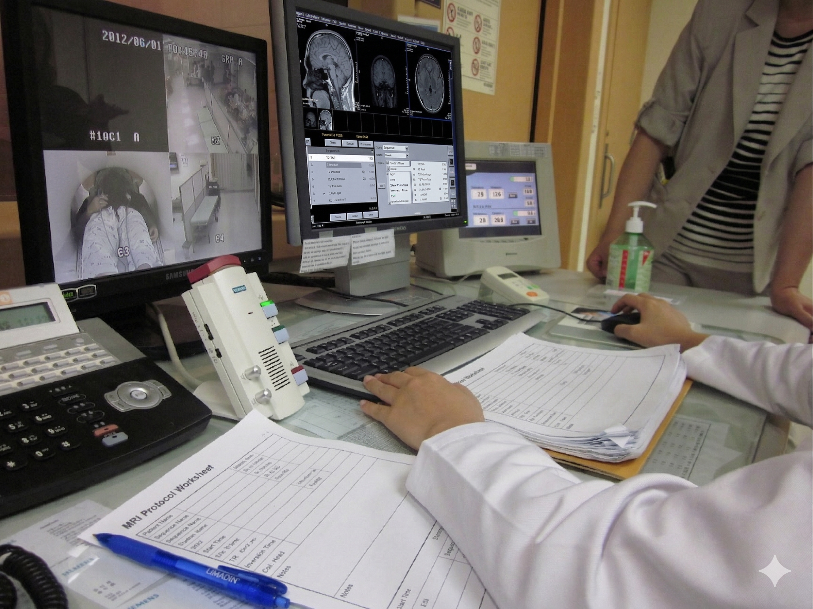
Protocol Management · Korea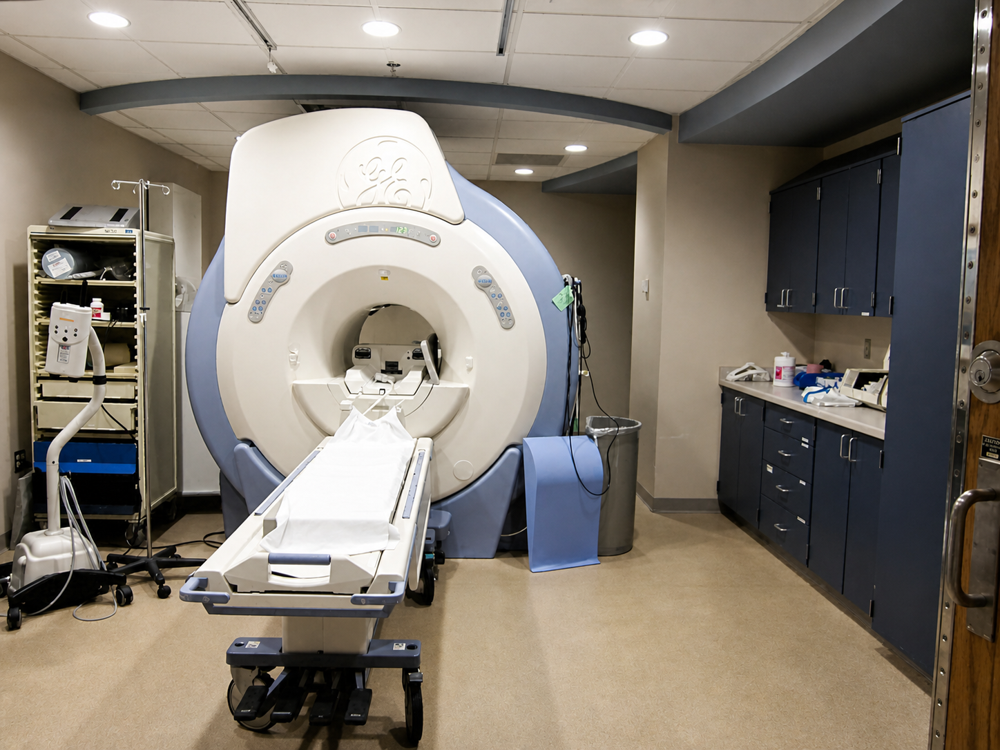
Image Review · China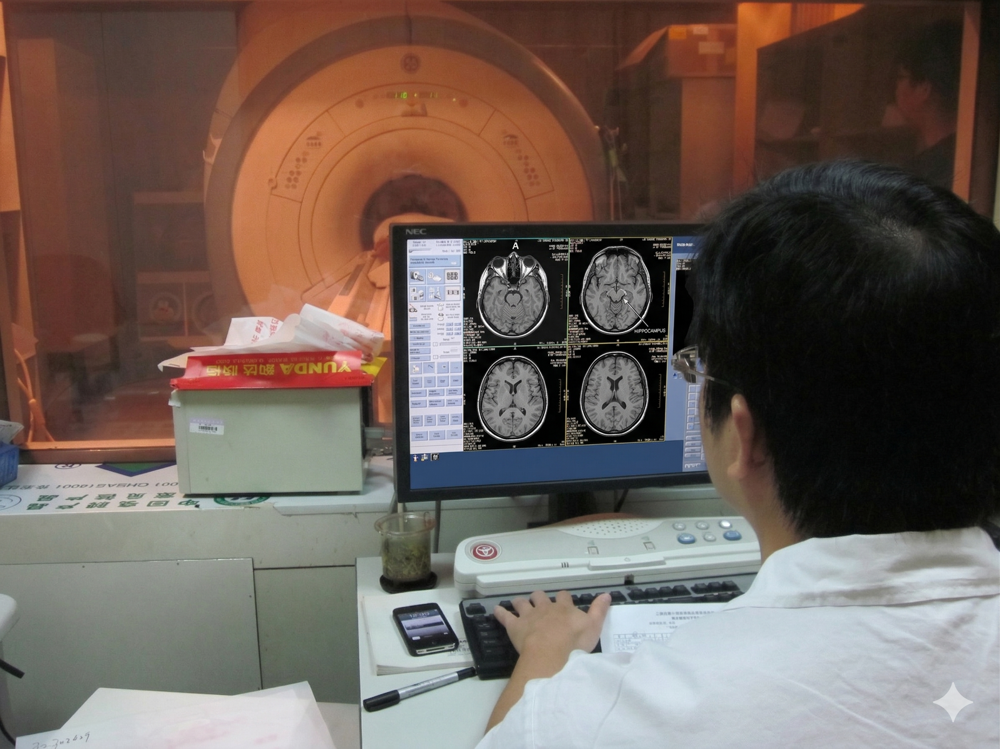
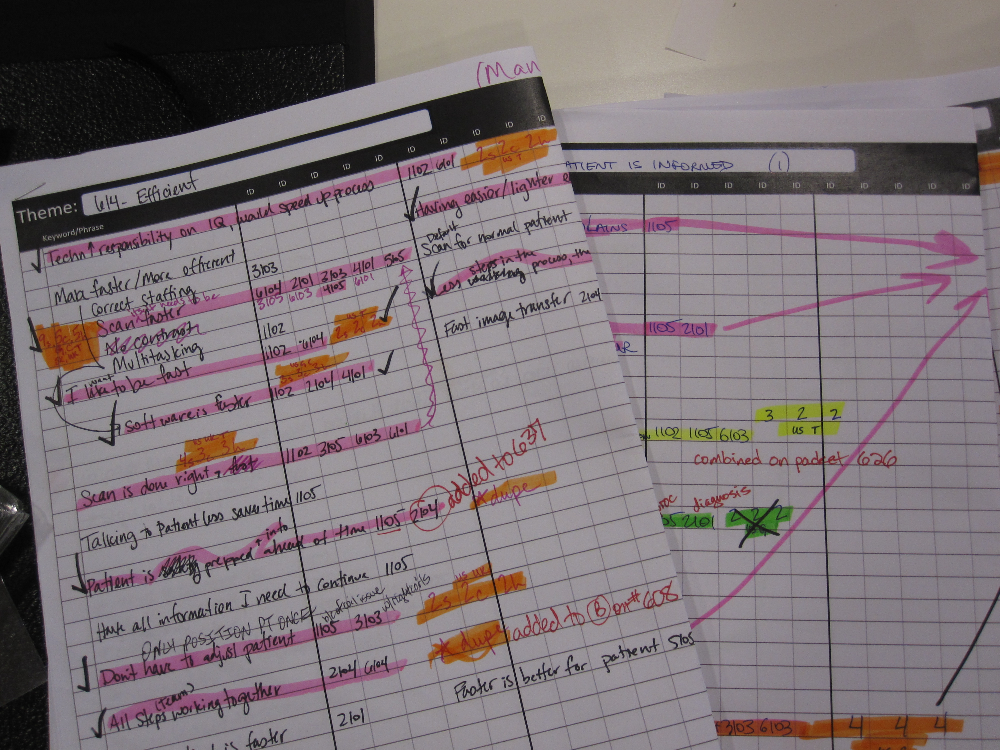
The project started in the field because GE Healthcare had a throughput problem, and throughput was a business problem. If a scan room lost minutes to avoidable software work, the scanner lost revenue. GE put the cost at roughly $2.3M in lost utilization per machine each year. We observed technologists across 9 hospitals in 6 countries to see where the workflow actually broke down.
The pattern became clear in the room. Technologists were managing hidden state, inconsistent tools, and a worklist that moved slower than the patient queue. They were trying to care for the patient and keep the exam moving while the console kept forcing them to re-orient themselves.
The fieldwork produced more than 80 pain points across 8 workflow stages. Those findings became a 57-page interaction specification for the AW Server convergence program, covering the major surfaces from worklist behavior to series navigation.
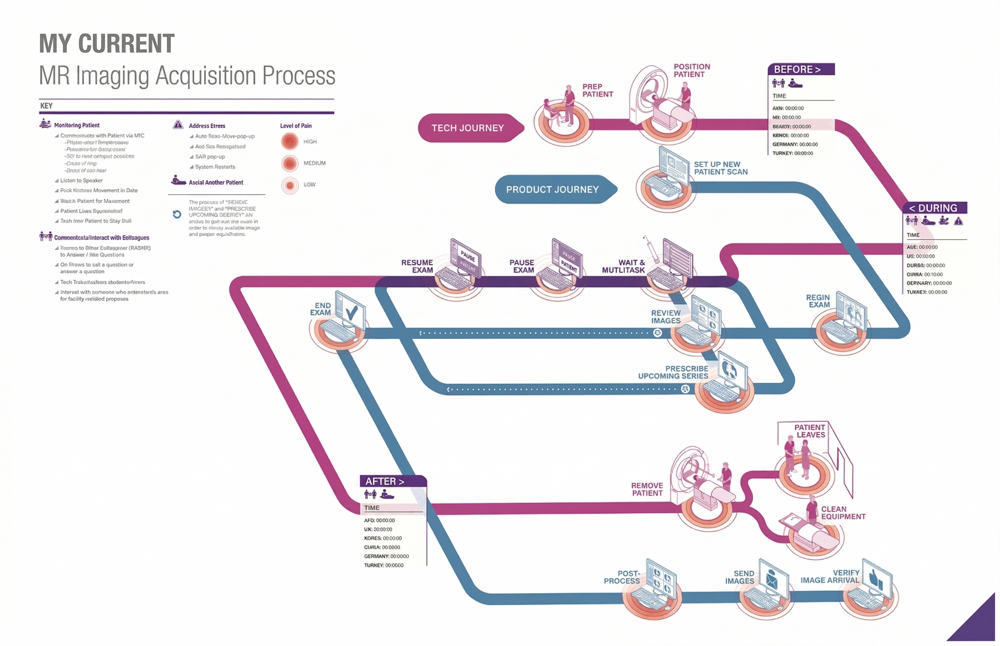
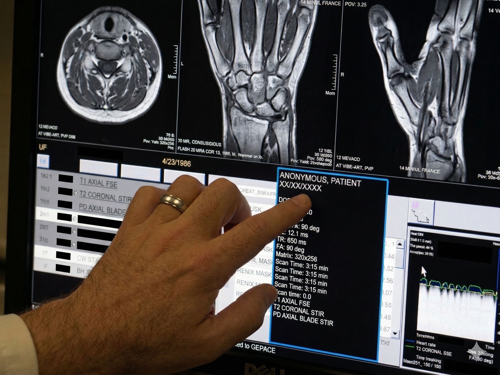
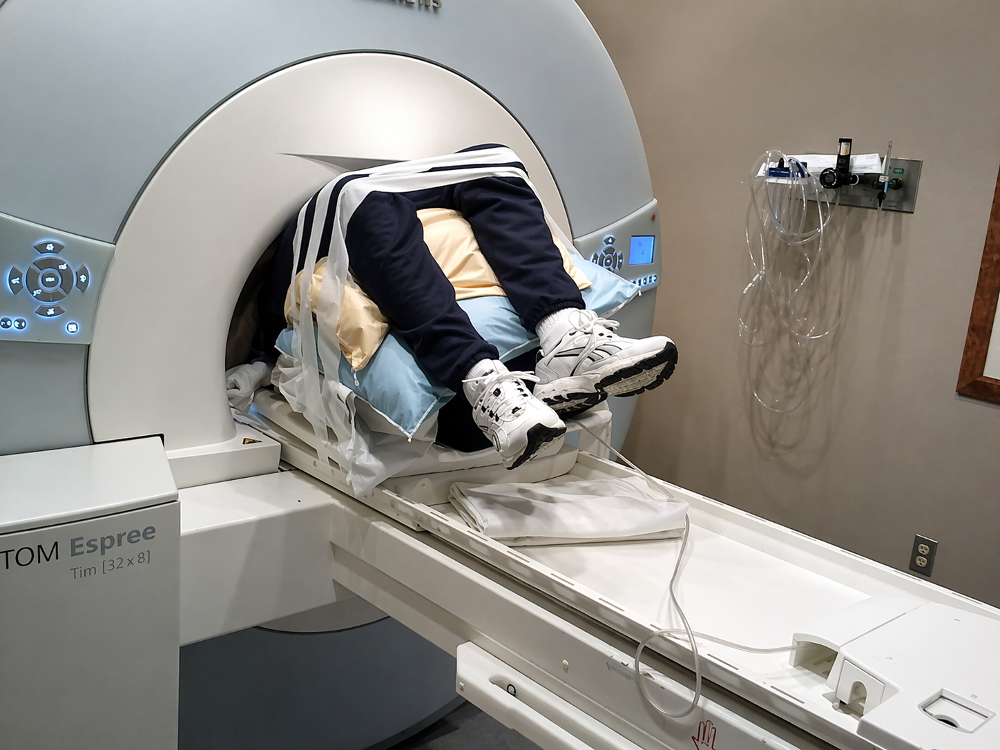
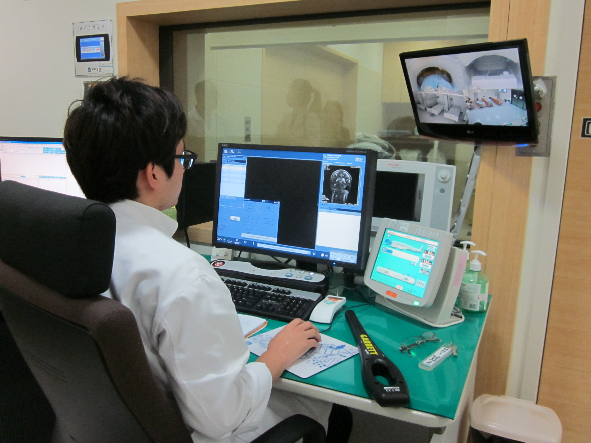
The research produced four persona types, split by experience level and facility throughput. Those two factors shaped what a technologist needed more than anything else. A veteran at a low-volume academic center did not need the same support as a junior technologist running 8 or more exams per hour.
Before we designed screens, we translated the research into an ideal experience model. The question driving all of it was this. If the software worked the way technologists needed it to work, what would a good shift feel like? And what would the product have to do to create that feeling? We used it to test proposed designs against what technologists had actually asked for.
We grouped the field observations around one question. What does a successful shift feel like to a technologist? Four answers kept coming back. Fast, autonomous, supported, reassuring. Each feeling was paired with the product qualities required to produce it. What the user feels on the left. What the software has to be on the right.

Speed here meant removing the work that should not have been there at all. Extra steps, hidden state, interruptions that had nothing to do with the scan.
Less clutter, fewer steps. A technologist's attention is limited, and the interface should spend it wisely.
In a clinical setting, predictability is the minimum. The software had to make its own state obvious so technologists could trust it without stopping to verify.
Experienced technologists trusted their own judgment. The software was getting in the way of that. They needed to adjust protocols, move through familiar cases quickly, and override defaults without a fight.
Technologists wanted help with the predictable parts. Pre-populated patient data, sensible protocol defaults, setup that moved fast. Taking the judgment call away from them entirely was a different thing, and it came up clearly in every concept evaluation.
Different technologists worked in different throughput contexts and at different skill levels. Personalization meant adapting to the user's working style instead of forcing one rigid model on everyone.
The software needed to stop making technologists hunt for state it already tracked, or remember things it could surface. The baseline was reducing unnecessary cognitive load. Adding capability on top of a workflow that was already brittle made things worse.
Helpful meant doing the work that should not fall on the technologist. Show the next patient before they are called. Pre-populate what the scanner already knows. Do not make the worklist a manual task.
Patient confidence is a scan quality issue. The way a technologist prepared a patient before the bore shaped what happened during the scan. The software could support that preparation, or treat it as outside scope.
The predictable actions, done dozens of times per shift, should require minimal effort. Most tasks are routine. An interface that treated them as complex was working against the technologist.
The experience before the bore shapes image quality. When the technologist had time and tools to project calm, scan outcomes improved. Most consoles treated that part of the job as invisible.
Experts had learned to ignore most of the interface. Newer technologists were overwhelmed by it. The redesign started from what we saw in the room: make the workspace easier to read without taking speed away from experienced users.


The existing product had grown without a clear organizing model. Fieldwork made the split obvious: Browser was for finding and preparing; Viewer was for acquiring and assessing. Locking that distinction into the architecture gave every later screen decision a stable product logic.

Across sites, 80–90% of toolbar use came from a handful of functions. Grouping tools by frequency and context shortened the expert path and made the toolbar more legible for newer technologists. In the browser, slow worklist search repeated across a full day became a throughput problem, so progressive filters kept the query running while the technologist narrowed criteria.

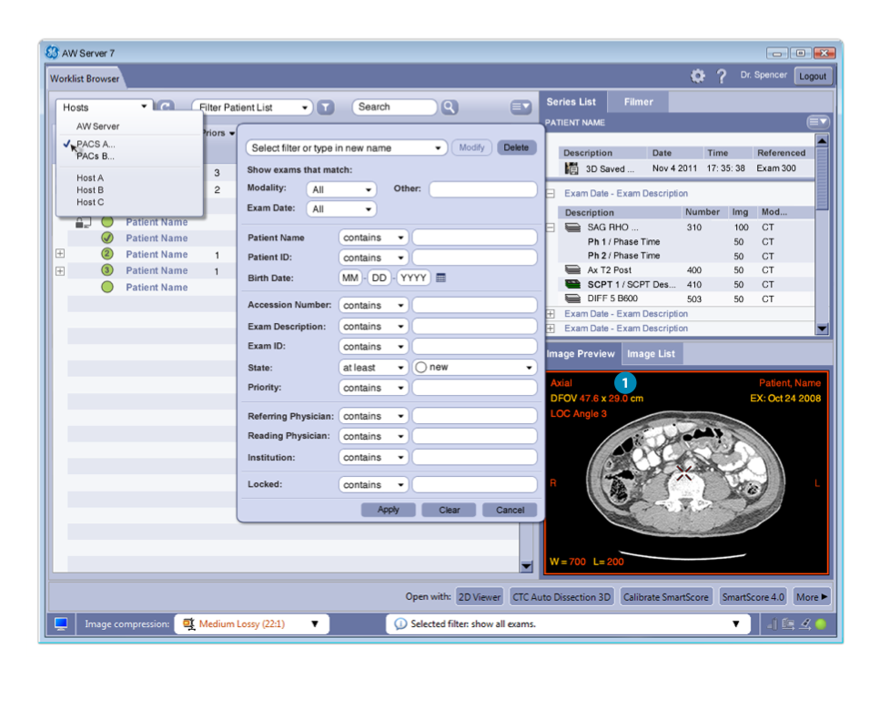
Moving between series took too many clicks, and the default viewport often showed the first localizer instead of the most recent acquisition. Technologists had to hunt for their place in the exam. The series navigator gave that state a permanent home, with floating and docked modes to support different throughput environments.
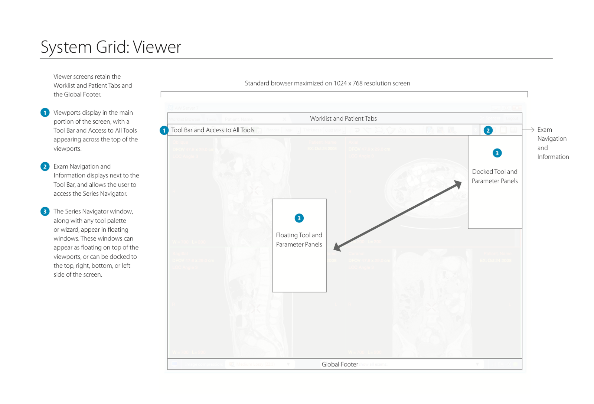
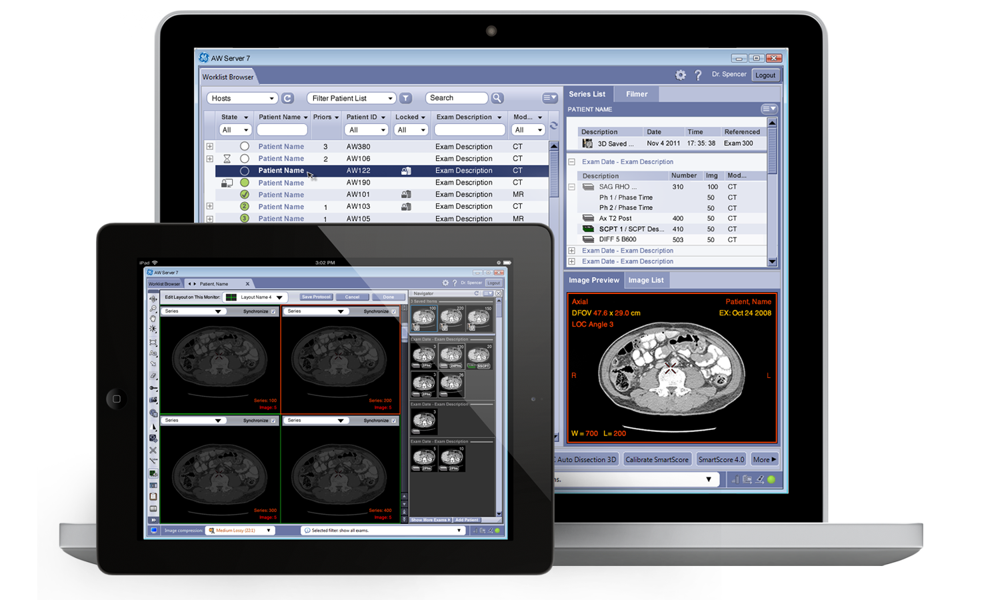
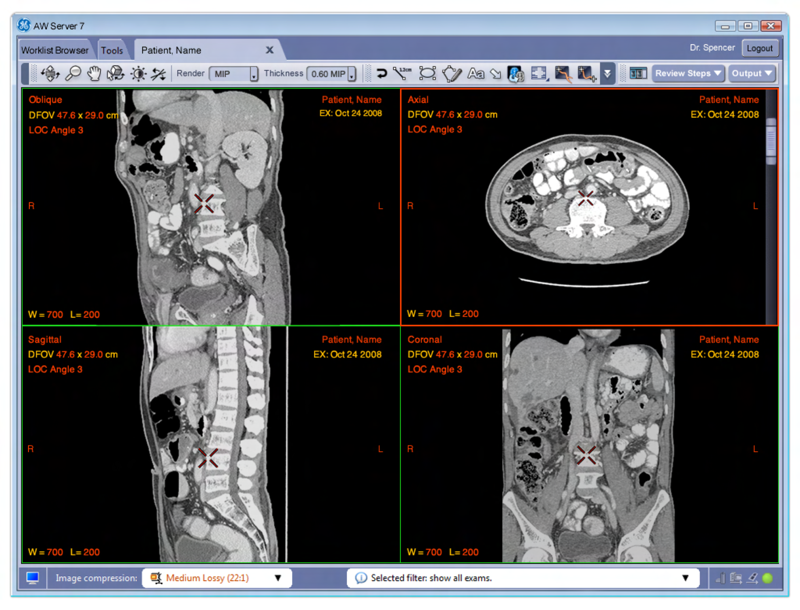
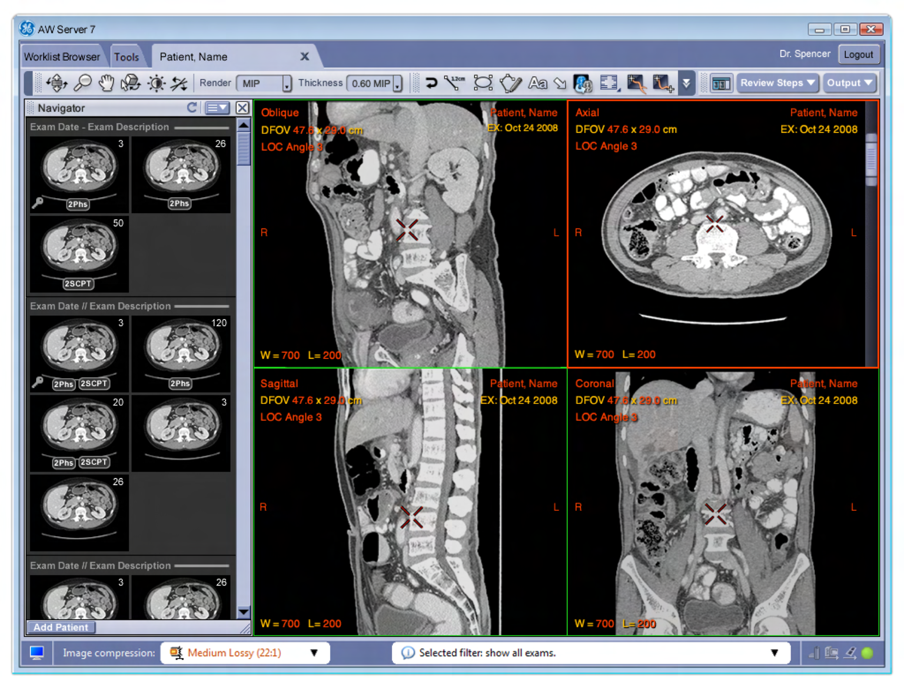
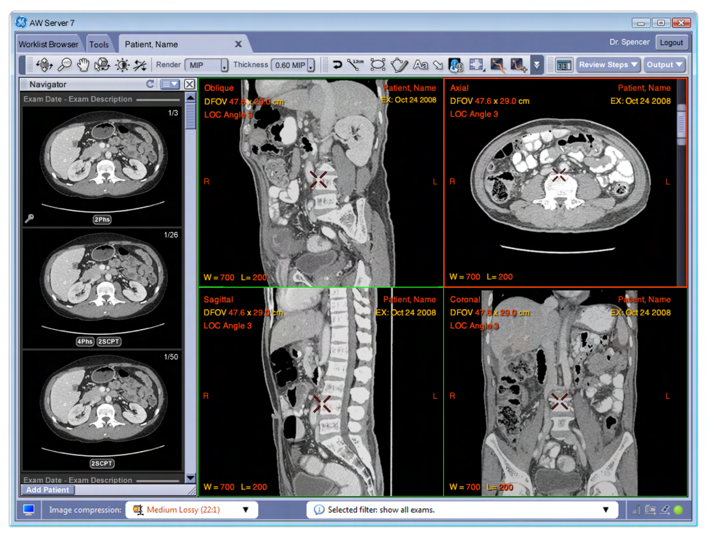
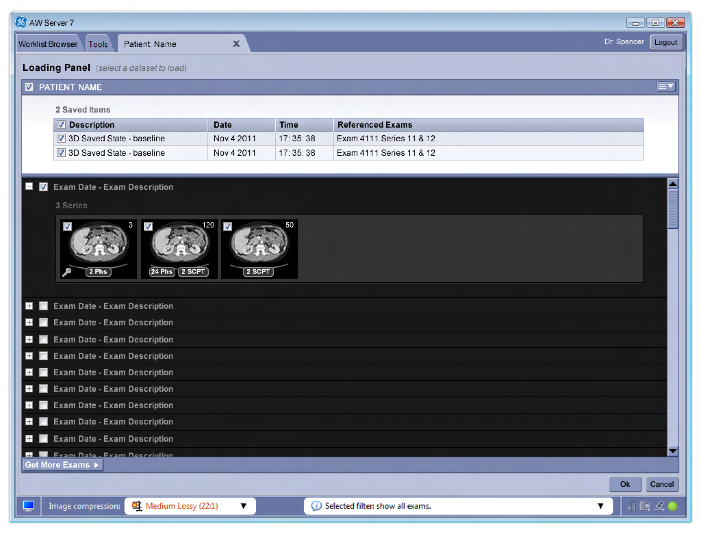
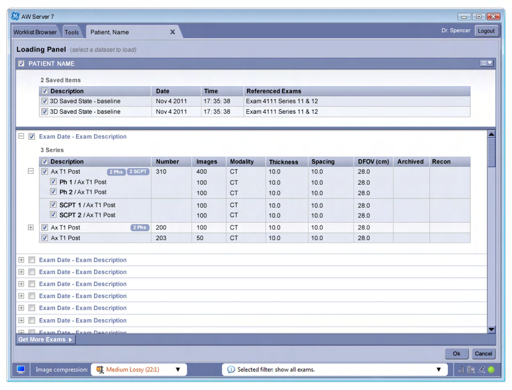
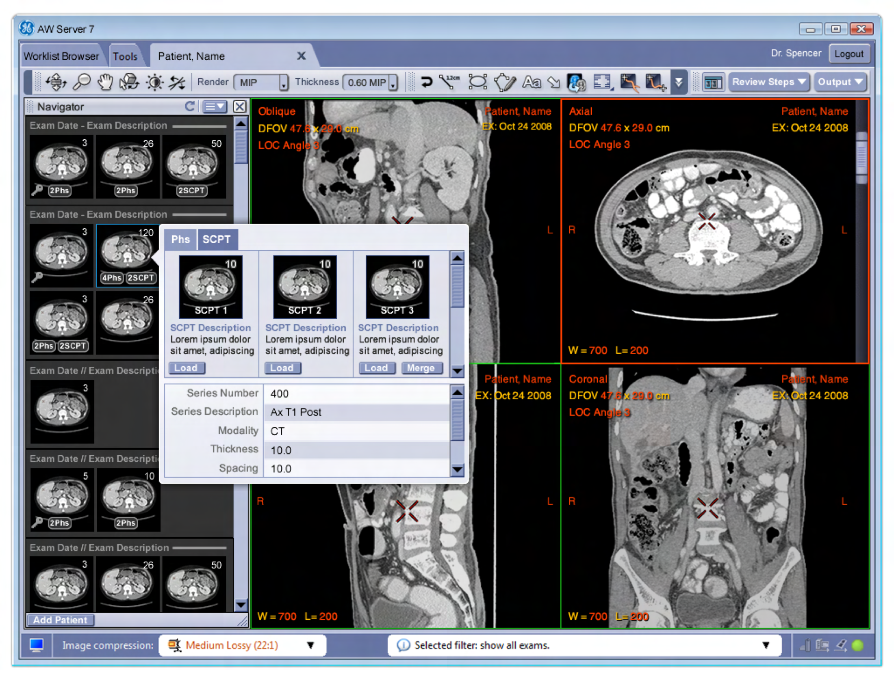
AW Server 7 · Interaction concepts · GE Healthcare
The pattern held across all six countries. Too much time burned on setup: finding the right patient, locating prior exams, adapting protocols, and entering data the scanner should already have known. In high-throughput sites, that overhead was the difference between a smooth day and a backlog that compounded all afternoon.
Browser behavior, worklist logic, search, and pre-populated data became the front door to the exam. Every minute saved in setup was a minute the scanner could actually run.
Technologists wanted pre-populated patient data, smart protocol defaults, and faster setup for routine cases. When concepts removed too much manual involvement, experienced technologists pushed back. They wanted help with predictable work, not removal from judgment calls.
The design rule was simple: automate the predictable parts and keep technologists in control of decisions that required expertise.
The technologists who got the best images spent time making patients feel safe before the bore. A calm patient holds still. A still patient produces a cleaner image. A cleaner image reduces rescans and protects the schedule.
That changed how the team treated patient-facing features. Welcome information, education screens, and positioning guidance affected image quality and throughput, not just patient comfort.